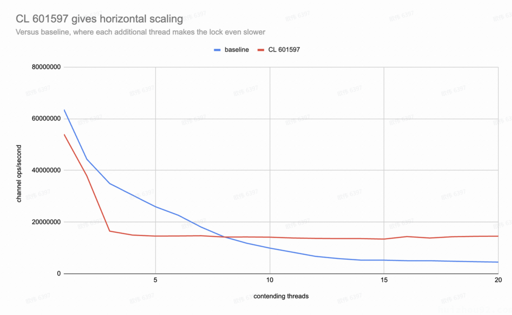
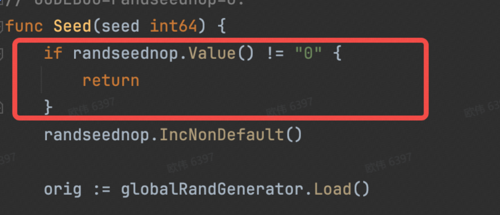

个人笔记，仅记录个人感觉用的上的。
完整变更参阅：https://go.dev/doc/go1.24
语言层面
泛型
支持泛型别名：类型别名可以像已定义的类型一样进行参数化。
例如：
1
| type set[T comparable] = map[T]bool
|
使用场景：
- 重构时，解决兼容性问题： 旧包到新包之间的通用类型等价，可以同时使用而无需破坏现有代码。
1
2
3
4
5
6
7
8
9
| package pkg1
type Model[T any] struct {
}
package pkg2
import "test/pkg1"
type Model[T any] = pkg1.Model[T]
|
1
| type Set[T comparable] = map[T]struct{}
|
相关issue：https://go.dev/issue/46477
工具
Go 命令
Go 模块现在可以使用指令跟踪可执行依赖项，从而取代了以前的解决方法。即将工具作为空白导入添加到通常名为"tools.go"的文件中。
现在可以直接加入到gomod文件中。
1
2
|
tool golang.org/x/tools/cmd/stringer
|
cmd使用：
1
| go get -tool golang.org/x/tools/cmd/stringer
|
安装工具：
新的GODEBUG设置toolchaintrace=1可用于跟踪go命令的工具链选择过程。
运行时
运行时的几项性能改进在一系列代表性基准测试中平均降低了 2-3% 的 CPU 开销。结果可能因应用程序而异。这些改进包括map基于 Swiss Tables 的新内置实现、更高效的小对象内存分配以及新的运行时内部互斥Mutex实现。
Map新的实现Swiss Table
详细分析可右转：Go1.24 map实现：Swiss Tables
Swiss Table是由Google工程师于2017年开发的一种高效哈希表实现，并在2017年CppCon大会上详细介绍了他的工作原理，旨在优化内存使用和提升性能，解决Google内部代码库中广泛使用的std::unordered_map所面临的性能问题。 其核心思想为充分利用了SIMD****指令及L1缓存。
基准测试（（缺少一些优化，仍然可以看出效果）
1
2
3
4
5
6
7
8
9
10
11
12
13
14
15
16
17
18
19
20
21
22
23
24
25
26
27
28
29
30
31
32
33
34
35
36
37
38
39
40
41
42
43
44
45
46
47
48
49
50
51
52
53
54
55
56
57
58
59
60
61
62
| │ /tmp/noswiss.lu.txt │ /tmp/swiss.lu.txt │
│ sec/op │ sec/op vs base │
MapIter/impl=runtimeMap/t=Int64/len=64-12 642.0n ± 3% 603.8n ± 6% -5.95% (p=0.004 n=6)
MapIter/impl=runtimeMap/t=Int64/len=8192-12 87.98µ ± 1% 78.80µ ± 1% -10.43% (p=0.002 n=6)
MapIter/impl=runtimeMap/t=Int64/len=4194304-12 47.40m ± 2% 44.41m ± 2% -6.30% (p=0.002 n=6)
MapIterLowLoad/impl=runtimeMap/t=Int64/len=64-12 145.85n ± 3% 92.85n ± 2% -36.34% (p=0.002 n=6)
MapIterLowLoad/impl=runtimeMap/t=Int64/len=8192-12 13.205µ ± 0% 6.078µ ± 1% -53.97% (p=0.002 n=6)
MapIterLowLoad/impl=runtimeMap/t=Int64/len=4194304-12 15.20m ± 1% 18.22m ± 1% +19.87% (p=0.002 n=6)
MapIterGrow/impl=runtimeMap/t=Int64/len=64-12 10.196µ ± 2% 8.092µ ± 8% -20.63% (p=0.002 n=6)
MapIterGrow/impl=runtimeMap/t=Int64/len=8192-12 1.259m ± 2% 1.008m ± 4% -19.97% (p=0.002 n=6)
MapIterGrow/impl=runtimeMap/t=Int64/len=4194304-12 1.424 ± 5% 1.275 ± 0% -10.47% (p=0.002 n=6)
MapGetHit/impl=runtimeMap/t=Int64/len=64-12 14.08n ± 4% 15.28n ± 3% +8.45% (p=0.002 n=6)
MapGetHit/impl=runtimeMap/t=Int64/len=8192-12 27.61n ± 1% 18.80n ± 1% -31.89% (p=0.002 n=6)
MapGetHit/impl=runtimeMap/t=Int64/len=4194304-12 82.94n ± 1% 102.20n ± 0% +23.22% (p=0.002 n=6)
MapGetHit/impl=runtimeMap/t=Int32/len=64-12 13.84n ± 5% 15.56n ± 2% +12.39% (p=0.002 n=6)
MapGetHit/impl=runtimeMap/t=Int32/len=8192-12 26.90n ± 2% 18.47n ± 2% -31.34% (p=0.002 n=6)
MapGetHit/impl=runtimeMap/t=Int32/len=4194304-12 79.60n ± 0% 93.00n ± 0% +16.83% (p=0.002 n=6)
MapGetHit/impl=runtimeMap/t=String/len=64-12 16.36n ± 6% 18.69n ± 1% +14.24% (p=0.002 n=6)
MapGetHit/impl=runtimeMap/t=String/len=8192-12 38.39n ± 1% 25.67n ± 1% -33.13% (p=0.002 n=6)
MapGetHit/impl=runtimeMap/t=String/len=4194304-12 146.0n ± 1% 172.2n ± 1% +17.95% (p=0.002 n=6)
MapGetMiss/impl=runtimeMap/t=Int64/len=64-12 15.63n ± 8% 15.08n ± 8% ~ (p=0.240 n=6)
MapGetMiss/impl=runtimeMap/t=Int64/len=8192-12 17.55n ± 1% 17.59n ± 4% ~ (p=0.909 n=6)
MapGetMiss/impl=runtimeMap/t=Int64/len=4194304-12 106.40n ± 1% 72.99n ± 2% -31.40% (p=0.002 n=6)
MapGetMiss/impl=runtimeMap/t=Int32/len=64-12 15.63n ± 7% 15.27n ± 8% ~ (p=0.132 n=6)
MapGetMiss/impl=runtimeMap/t=Int32/len=8192-12 17.18n ± 3% 17.25n ± 1% ~ (p=0.729 n=6)
MapGetMiss/impl=runtimeMap/t=Int32/len=4194304-12 100.15n ± 1% 74.71n ± 1% -25.40% (p=0.002 n=6)
MapGetMiss/impl=runtimeMap/t=String/len=64-12 18.96n ± 3% 18.19n ± 11% ~ (p=0.132 n=6)
MapGetMiss/impl=runtimeMap/t=String/len=8192-12 23.79n ± 3% 20.98n ± 2% -11.79% (p=0.002 n=6)
MapGetMiss/impl=runtimeMap/t=String/len=4194304-12 134.85n ± 1% 84.82n ± 1% -37.10% (p=0.002 n=6)
MapPutGrow/impl=runtimeMap/t=Int64/len=64-12 5.886µ ± 3% 5.699µ ± 3% -3.18% (p=0.015 n=6)
MapPutGrow/impl=runtimeMap/t=Int64/len=8192-12 739.1µ ± 2% 816.0µ ± 4% +10.41% (p=0.002 n=6)
MapPutGrow/impl=runtimeMap/t=Int64/len=4194304-12 929.3m ± 1% 894.2m ± 5% ~ (p=0.065 n=6)
MapPutGrow/impl=runtimeMap/t=Int32/len=64-12 5.487µ ± 4% 5.326µ ± 2% -2.93% (p=0.028 n=6)
MapPutGrow/impl=runtimeMap/t=Int32/len=8192-12 681.6µ ± 2% 767.3µ ± 2% +12.58% (p=0.002 n=6)
MapPutGrow/impl=runtimeMap/t=Int32/len=4194304-12 831.9m ± 2% 802.9m ± 1% -3.49% (p=0.002 n=6)
MapPutGrow/impl=runtimeMap/t=String/len=64-12 7.607µ ± 2% 7.379µ ± 2% -2.99% (p=0.002 n=6)
MapPutGrow/impl=runtimeMap/t=String/len=8192-12 1.204m ± 4% 1.212m ± 4% ~ (p=0.310 n=6)
MapPutGrow/impl=runtimeMap/t=String/len=4194304-12 1.699 ± 2% 1.876 ± 1% +10.37% (p=0.002 n=6)
MapPutPreAllocate/impl=runtimeMap/t=Int64/len=64-12 2.179µ ± 1% 1.428µ ± 5% -34.47% (p=0.002 n=6)
MapPutPreAllocate/impl=runtimeMap/t=Int64/len=8192-12 277.6µ ± 2% 198.6µ ± 1% -28.45% (p=0.002 n=6)
MapPutPreAllocate/impl=runtimeMap/t=Int64/len=4194304-12 389.7m ± 1% 518.2m ± 1% +32.97% (p=0.002 n=6)
MapPutPreAllocate/impl=runtimeMap/t=Int32/len=64-12 1.784µ ± 2% 1.110µ ± 3% -37.78% (p=0.002 n=6)
MapPutPreAllocate/impl=runtimeMap/t=Int32/len=8192-12 228.1µ ± 5% 151.4µ ± 4% -33.62% (p=0.002 n=6)
MapPutPreAllocate/impl=runtimeMap/t=Int32/len=4194304-12 361.5m ± 1% 481.2m ± 1% +33.10% (p=0.002 n=6)
MapPutPreAllocate/impl=runtimeMap/t=String/len=64-12 2.670µ ± 3% 2.167µ ± 3% -18.81% (p=0.002 n=6)
MapPutPreAllocate/impl=runtimeMap/t=String/len=8192-12 380.1µ ± 2% 417.2µ ± 9% +9.77% (p=0.015 n=6)
MapPutPreAllocate/impl=runtimeMap/t=String/len=4194304-12 493.1m ± 4% 718.1m ± 7% +45.62% (p=0.002 n=6)
MapPutReuse/impl=runtimeMap/t=Int32/len=64-12 1421.0n ± 3% 804.0n ± 5% -43.42% (p=0.002 n=6)
MapPutReuse/impl=runtimeMap/t=Int32/len=8192-12 192.4µ ± 1% 120.6µ ± 1% -37.30% (p=0.002 n=6)
MapPutReuse/impl=runtimeMap/t=Int32/len=4194304-12 364.0m ± 2% 473.0m ± 2% +29.95% (p=0.002 n=6)
MapPutReuse/impl=runtimeMap/t=String/len=64-12 1.602µ ± 4% 1.083µ ± 14% -32.41% (p=0.002 n=6)
MapPutReuse/impl=runtimeMap/t=String/len=8192-12 232.4µ ± 1% 165.7µ ± 2% -28.68% (p=0.002 n=6)
MapPutReuse/impl=runtimeMap/t=String/len=4194304-12 440.4m ± 2% 672.5m ± 1% +52.72% (p=0.002 n=6)
MapPutDelete/impl=runtimeMap/t=Int64/len=64-12 34.25n ± 3% 37.76n ± 5% +10.23% (p=0.002 n=6)
MapPutDelete/impl=runtimeMap/t=Int64/len=8192-12 57.91n ± 2% 45.24n ± 2% -21.89% (p=0.002 n=6)
MapPutDelete/impl=runtimeMap/t=Int64/len=4194304-12 170.5n ± 0% 222.0n ± 1% +30.20% (p=0.002 n=6)
MapPutDelete/impl=runtimeMap/t=Int32/len=64-12 34.06n ± 4% 37.87n ± 6% +11.16% (p=0.002 n=6)
MapPutDelete/impl=runtimeMap/t=Int32/len=8192-12 54.92n ± 1% 43.41n ± 2% -20.96% (p=0.002 n=6)
MapPutDelete/impl=runtimeMap/t=Int32/len=4194304-12 153.4n ± 1% 178.3n ± 2% +16.26% (p=0.002 n=6)
MapPutDelete/impl=runtimeMap/t=String/len=64-12 42.11n ± 8% 48.48n ± 7% +15.12% (p=0.002 n=6)
MapPutDelete/impl=runtimeMap/t=String/len=8192-12 78.46n ± 1% 56.10n ± 2% -28.50% (p=0.002 n=6)
MapPutDelete/impl=runtimeMap/t=String/len=4194304-12 204.6n ± 1% 261.4n ± 1% +27.76% (p=0.002 n=6)
|
可以通过在构建时设置GOEXPERIMENT=noswissmap来恢复旧的实现。
相关issue：https://go.dev/issue/54766
Mutex优化
作者发现随着 GOMAXPROCS 的增加，mutex 的性能明显下降。在 GOMAXPROCS=20 时，200 次channel操作平均耗时 44 微秒，平均每 220 纳秒调用一次 unlock2，每次都有机会唤醒一个睡眠线程。 另一个角度是考虑进程的 CPU占用时间。 下面的数据显示，在 1.78 秒的Wall-Clock Time内，进程的20个线程在lock2调用中总共有27.74秒处于CPU(自旋)上。
也就说在lock2相关线程在争用锁时同时在自旋，消耗大量CPU资源。
新提案引入了spinbit机制，增加一个spinning位，表示是否有线程处于忙等待状态。一个线程可以独占此位，在轮询状态时拥有优先权。其他线程无需忙等待，直接进入休眠。同时提案优化了唤醒逻辑，当unlock2检测到已有线程正在忙等待时，不再唤醒休眠线程，从而减少不必要的线程切换和上下文切换。
1
2
3
4
5
6
| const (
mutexLocked = 0x001
mutexSleeping = 0x002
mutexSpinning = 0x100
...
)
|
基准测试：
1
2
3
4
5
6
7
8
9
10
11
12
13
14
15
16
17
18
19
20
21
22
23
24
25
26
27
| goos: linux
goarch: amd64
pkg: runtime
cpu: 13th Gen Intel(R) Core(TM) i7-13700H
│ old │ new │
│ sec/op │ sec/op vs base │
ChanContended 3.147µ ± 0% 3.703µ ± 0% +17.65% (p=0.000 n=10)
ChanContended-2 4.511µ ± 2% 5.280µ ± 7% +17.06% (p=0.000 n=10)
ChanContended-3 5.726µ ± 2% 12.125µ ± 2% +111.75% (p=0.000 n=10)
ChanContended-4 6.574µ ± 1% 13.356µ ± 4% +103.16% (p=0.000 n=10)
ChanContended-5 7.706µ ± 1% 13.717µ ± 3% +78.00% (p=0.000 n=10)
ChanContended-6 8.830µ ± 1% 13.674µ ± 2% +54.85% (p=0.000 n=10)
ChanContended-7 11.07µ ± 0% 13.59µ ± 2% +22.77% (p=0.000 n=10)
ChanContended-8 13.99µ ± 1% 14.06µ ± 1% ~ (p=0.190 n=10)
ChanContended-9 16.93µ ± 2% 14.04µ ± 3% -17.04% (p=0.000 n=10)
ChanContended-10 20.12µ ± 4% 14.12µ ± 1% -29.80% (p=0.000 n=10)
ChanContended-11 23.96µ ± 2% 14.44µ ± 3% -39.74% (p=0.000 n=10)
ChanContended-12 29.65µ ± 6% 14.61µ ± 3% -50.74% (p=0.000 n=10)
ChanContended-13 33.98µ ± 7% 14.69µ ± 3% -56.76% (p=0.000 n=10)
ChanContended-14 37.90µ ± 1% 14.69µ ± 3% -61.23% (p=0.000 n=10)
ChanContended-15 37.94µ ± 4% 14.89µ ± 5% -60.75% (p=0.000 n=10)
ChanContended-16 39.56µ ± 0% 13.89µ ± 1% -64.89% (p=0.000 n=10)
ChanContended-17 39.56µ ± 0% 14.45µ ± 4% -63.47% (p=0.000 n=10)
ChanContended-18 41.24µ ± 2% 13.95µ ± 3% -66.17% (p=0.000 n=10)
ChanContended-19 42.77µ ± 5% 13.80µ ± 2% -67.74% (p=0.000 n=10)
ChanContended-20 44.26µ ± 2% 13.74µ ± 1% -68.96% (p=0.000 n=10)
geomean 17.60µ 12.46µ -29.22%
|

在竞争比较少的情况下，性能有所损失，但是在竞争比较多的情况下，性能提升显著，平均可以提升29.22%性能。
可以通过在构建时设置GOEXPERIMENT=nospinbitmutex来恢复旧的实现。
相关issue：https://github.com/golang/go/issues/68578
proposal：https://github.com/golang/proposal/blob/master/design/68578-mutex-spinbit.md
标准库
weak
weak提供了弱指针的功能。此功能使开发能够创建内存高效的数据结构，并且不会阻止对象被垃圾回收，适用于缓存、规范化和管理对大对象的引用。
使用方式：
1
2
3
4
5
6
7
8
9
10
11
12
13
14
15
16
17
18
19
20
21
22
23
24
25
| package main
import (
"fmt"
"runtime"
"weak"
)
type Data struct {
value string
}
func main() {
v := &Data{value: "tmp"}
wp := weak.Make(v)
fmt.Println("value1:", wp.Value())
runtime.AddCleanup(v, func(d string) {
fmt.Println("cleanup:", d)
}, v.value)
runtime.GC()
fmt.Println("value2:", wp.Value())
}
|
相关issue：https://go.dev/issue/67552
sync.Map新的实现HashTrieMap
详细分析可右转：Go1.24 sync.Map实现：HashTrieMap
sync.Map实现使用新的数据结构HashTrieMap，从而提高了性能，特别是写性能，减少了锁的争用。
HashTrieMap 是一种结合了哈希表和前缀树（Trie）的特性来实现高效的键值存储与查找。由于前缀树的特性可以知道，其实现的并发安全map拥有较细的锁粒度。并且可以无锁Load，拥有更高的性能。
1
2
3
4
5
6
7
8
9
10
11
12
13
14
15
16
17
18
19
20
21
22
23
24
25
26
27
28
29
30
31
32
33
34
35
36
37
38
39
40
41
42
43
44
45
46
47
48
49
50
51
52
53
54
55
56
57
58
59
60
61
62
63
64
65
66
67
68
69
70
71
72
73
74
75
76
77
78
79
80
81
82
83
84
85
86
| /gomaxprocs:
│ before │ after │
│ sec/op │ sec/op vs base │
MapLoadMostlyHits 31.31n ± 1% 33.48n ± 3% +6.93% (p=0.002 n=6)
MapLoadMostlyMisses 28.66n ± 3% 20.81n ± 6% -27.36% (p=0.002 n=6)
MapLoadOrStoreBalanced 265.8n ± 7% 233.5n ± 2% -12.14% (p=0.002 n=6)
MapLoadOrStoreUnique 510.9n ± 7% 441.6n ± 3% -13.56% (p=0.002 n=6)
MapLoadOrStoreCollision 20.11n ± 0% 15.63n ± 1% -22.30% (p=0.002 n=6)
MapLoadAndDeleteBalanced 24.61n ± 2% 20.85n ± 2% -15.26% (p=0.002 n=6)
MapLoadAndDeleteUnique 23.63n ± 4% 25.19n ± 4% +6.56% (p=0.009 n=6)
MapLoadAndDeleteCollision 386.5n ± 6% 120.4n ± 6% -68.84% (p=0.002 n=6)
MapRange 12.050µ ± 1% 7.672µ ± 2% -36.33% (p=0.002 n=6)
MapAdversarialAlloc 161.05n ± 5% 53.16n ± 6% -66.99% (p=0.002 n=6)
MapAdversarialDelete 123.75n ± 8% 27.69n ± 1% -77.62% (p=0.002 n=6)
MapDeleteCollision 12.92n ± 2% 12.69n ± 3% ~ (p=0.065 n=6)
MapSwapCollision 70.88n ± 3% 44.49n ± 6% -37.22% (p=0.002 n=6)
MapSwapMostlyHits 78.25n ± 5% 81.82n ± 6% +4.56% (p=0.004 n=6)
MapSwapMostlyMisses 531.2n ± 6% 154.8n ± 6% -70.85% (p=0.002 n=6)
MapCompareAndSwapCollision 107.6n ± 2% 129.9n ± 5% +20.72% (p=0.002 n=6)
MapCompareAndSwapNoExistingKey 23.44n ± 6% 24.57n ± 3% ~ (p=0.180 n=6)
MapCompareAndSwapValueNotEqual 24.40n ± 1% 22.31n ± 3% -8.56% (p=0.002 n=6)
MapCompareAndSwapMostlyHits 82.29n ± 6% 90.62n ± 8% +10.13% (p=0.002 n=6)
MapCompareAndSwapMostlyMisses 53.72n ± 5% 49.79n ± 6% -7.33% (p=0.002 n=6)
MapCompareAndDeleteCollision 80.29n ± 4% 105.40n ± 7% +31.27% (p=0.002 n=6)
MapCompareAndDeleteMostlyHits 118.6n ± 6% 182.3n ± 12% +53.82% (p=0.002 n=6)
MapCompareAndDeleteMostlyMisses 43.07n ± 7% 38.99n ± 6% -9.48% (p=0.002 n=6)
MapClear 193.7n ± 2% 134.4n ± 1% -30.60% (p=0.002 n=6)
geomean 91.17n 69.91n -23.32%
/gomaxprocs: 2
│ before │ after │
│ sec/op │ sec/op vs base │
MapLoadMostlyHits 16.05n ± 1% 17.10n ± 1% +6.48% (p=0.002 n=6)
MapLoadMostlyMisses 14.54n ± 2% 10.53n ± 2% -27.55% (p=0.002 n=6)
MapLoadOrStoreBalanced 354.9n ± 10% 128.9n ± 7% -63.67% (p=0.002 n=6)
MapLoadOrStoreUnique 634.0n ± 13% 247.1n ± 6% -61.04% (p=0.002 n=6)
MapLoadOrStoreCollision 10.125n ± 85% 7.887n ± 1% -22.10% (p=0.002 n=6)
MapLoadAndDeleteBalanced 25.70n ± 51% 10.64n ± 5% -58.58% (p=0.002 n=6)
MapLoadAndDeleteUnique 12.28n ± 78% 12.84n ± 4% ~ (p=0.065 n=6)
MapLoadAndDeleteCollision 337.6n ± 8% 131.8n ± 47% -60.94% (p=0.002 n=6)
MapRange 6.100µ ± 2% 3.827µ ± 3% -37.26% (p=0.002 n=6)
MapAdversarialAlloc 170.00n ± 2% 27.58n ± 4% -83.78% (p=0.002 n=6)
MapAdversarialDelete 133.20n ± 4% 14.38n ± 11% -89.20% (p=0.002 n=6)
MapDeleteCollision 6.449n ± 119% 6.348n ± 1% -1.57% (p=0.002 n=6)
MapSwapCollision 100.80n ± 11% 81.76n ± 19% -18.89% (p=0.015 n=6)
MapSwapMostlyHits 56.65n ± 12% 52.62n ± 20% ~ (p=0.310 n=6)
MapSwapMostlyMisses 624.8n ± 4% 235.8n ± 11% -62.25% (p=0.002 n=6)
MapCompareAndSwapCollision 105.1n ± 24% 100.5n ± 35% ~ (p=1.000 n=6)
MapCompareAndSwapNoExistingKey 12.61n ± 93% 12.28n ± 7% ~ (p=0.180 n=6)
MapCompareAndSwapValueNotEqual 12.25n ± 1% 11.21n ± 8% -8.53% (p=0.002 n=6)
MapCompareAndSwapMostlyHits 66.34n ± 21% 64.94n ± 19% ~ (p=0.937 n=6)
MapCompareAndSwapMostlyMisses 47.60n ± 13% 26.30n ± 8% -44.74% (p=0.002 n=6)
MapCompareAndDeleteCollision 46.10n ± 87% 132.50n ± 9% +187.39% (p=0.002 n=6)
MapCompareAndDeleteMostlyHits 105.2n ± 12% 186.6n ± 20% +77.41% (p=0.002 n=6)
MapCompareAndDeleteMostlyMisses 40.77n ± 10% 21.54n ± 8% -47.17% (p=0.002 n=6)
MapClear 252.8n ± 11% 128.7n ± 22% -49.11% (p=0.002 n=6)
geomean 72.61n 46.91n -35.39%
/gomaxprocs: 4
│ before │ after │
│ sec/op │ sec/op vs base │
MapLoadMostlyHits 7.870n ± 1% 8.415n ± 3% +6.93% (p=0.002 n=6)
MapLoadMostlyMisses 7.210n ± 1% 5.314n ± 2% -26.28% (p=0.002 n=6)
MapLoadOrStoreBalanced 360.10n ± 18% 71.78n ± 2% -80.07% (p=0.002 n=6)
MapLoadOrStoreUnique 707.2n ± 18% 135.2n ± 4% -80.88% (p=0.002 n=6)
MapLoadOrStoreCollision 5.089n ± 201% 3.963n ± 1% -22.11% (p=0.002 n=6)
MapLoadAndDeleteBalanced 17.045n ± 64% 5.280n ± 1% -69.02% (p=0.002 n=6)
MapLoadAndDeleteUnique 14.250n ± 57% 6.452n ± 1% ~ (p=0.368 n=6)
MapLoadAndDeleteCollision 19.34n ± 39% 23.31n ± 27% ~ (p=0.180 n=6)
MapRange 3.055µ ± 3% 1.918µ ± 2% -37.23% (p=0.002 n=6)
MapAdversarialAlloc 245.30n ± 6% 14.90n ± 23% -93.92% (p=0.002 n=6)
MapAdversarialDelete 143.550n ± 2% 8.184n ± 1% -94.30% (p=0.002 n=6)
MapDeleteCollision 9.199n ± 65% 3.165n ± 1% -65.59% (p=0.002 n=6)
MapSwapCollision 164.7n ± 7% 108.7n ± 36% -34.01% (p=0.002 n=6)
MapSwapMostlyHits 33.12n ± 15% 35.79n ± 9% ~ (p=0.180 n=6)
MapSwapMostlyMisses 604.5n ± 5% 280.2n ± 7% -53.64% (p=0.002 n=6)
MapCompareAndSwapCollision 96.02n ± 40% 69.93n ± 24% -27.17% (p=0.041 n=6)
MapCompareAndSwapNoExistingKey 6.345n ± 1% 6.202n ± 1% -2.24% (p=0.002 n=6)
MapCompareAndSwapValueNotEqual 6.121n ± 3% 5.564n ± 4% -9.09% (p=0.002 n=6)
MapCompareAndSwapMostlyHits 44.21n ± 13% 43.46n ± 11% ~ (p=0.485 n=6)
MapCompareAndSwapMostlyMisses 33.51n ± 6% 13.51n ± 5% -59.70% (p=0.002 n=6)
MapCompareAndDeleteCollision 27.85n ± 104% 31.02n ± 26% ~ (p=0.180 n=6)
MapCompareAndDeleteMostlyHits 50.43n ± 33% 109.45n ± 8% +117.03% (p=0.002 n=6)
MapCompareAndDeleteMostlyMisses 27.17n ± 7% 11.37n ± 3% -58.14% (p=0.002 n=6)
MapClear 300.2n ± 5% 124.2n ± 8% -58.64% (p=0.002 n=6)
geomean 50.38n 25.79n -48.81%
|
可以通过在构建时设置GOEXPERIMENT=nosynchashtriemap来恢复旧的实现。
相关issue：https://go.dev/issue/70683
encoding/json
添加了新的标签 omitzero ,如果结构体字段为零值，则Marshal 时将忽略该字段的输出，功能类似于omitempty 标签。如果字段类型具有IsZero() bool 方法，则将使用该方法来确定值是否为零。否则，如果它是其类型的零值，则该值为零值。
与omitempty相比omitzero，其可以忽略所有的零值，可以忽略空结构体，例如time.Timer，并且可以通过IsZero方法来自定义零值，达到特定场景忽略Json输出的效果。（可以解决omitempty无法忽略time.Timer等结构体的问题。）
适用于希望JSON输出更小且更易于阅读（大部分情况可以代替omitempty）。
示例：
1
2
3
4
5
6
7
8
9
10
11
12
13
14
15
16
17
18
19
20
21
22
23
24
25
| package main
import (
"encoding/json"
"fmt"
)
type Bar struct {
Field1 string `json:"field_1,omitempty"`
Field2 *string `json:"field_2,omitzero"`
}
type Foo struct {
Field1 string `json:"field_1,omitempty"`
Field2 *string `json:"field_2,omitzero"`
Field3 int `json:"field_3,omitempty"`
Field4 *int `json:"field_4,omitzero"`
Field5 Bar `json:"field_5,omitempty"`
Field6 *Bar `json:"field_6,omitzero"`
}
func main() {
data, _ := json.Marshal(&Foo{})
fmt.Println(string(data))
}
|
相关issue：https://go.dev/issue/45669
math/rand
注意！对已弃用的顶级Seed函数的调用不再有效！。
要恢复旧行为，需使用GODEBUG 设置 randseednop=0。

相关issue：https://go.dev/issue/67273
改进的终结器AddCleanup
runtime.AddCleanup函数是一种比runtime.SetFinalizer更灵活、更高效、更不容易出错的终结器机制。AddCleanup将清理函数附加到对象，该函数将在对象不再可访问时运行。
其解决了SetFinalizer的多个问题：
- 单个对象可以拥有多个
AddCleanup。
- 当对象形成循环时，不会导致泄漏。（将以任意顺序执行）
- 清理不会延迟释放它指向的对象。
使用场景：
包裹基础资源，在清理时释放基础资源。
1
2
3
4
5
6
7
8
9
10
11
12
13
14
15
16
17
18
19
20
21
22
23
24
25
26
27
28
29
30
31
| package main
import (
"database/sql"
"fmt"
"runtime"
"github.com/DATA-DOG/go-sqlmock"
)
type Resource struct {
db *sql.DB
}
func NewResource() *Resource {
db, _, _ := sqlmock.New()
res := &Resource{db: db}
runtime.AddCleanup(res, func(db *sql.DB) {
fmt.Println("Closing DB connection")
_ = db.Close()
}, res.db)
return res
}
func main() {
res := NewResource()
res = nil
runtime.GC()
}
|
相关issue：https://go.dev/issue/67535